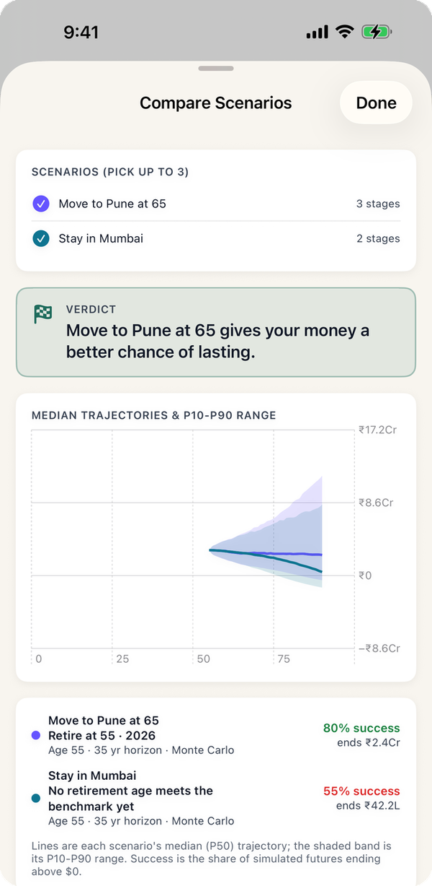

Many people want to spend the active first decade of retirement where their friends, family and doctors are, and move somewhere quieter and cheaper later, often a hometown. The question is whether a late move is worth planning for, or whether only moving on day one makes a difference. Bhavitta models a retirement as a series of stages, each with its own city, so a move at 65 or 70 is just a second stage. Every figure below comes from the app's engine: 10,000 simulated market paths, in rupees.
How much does a later move save?
The corpus at 55, to the nearest ₹5 lakh, for an 80% chance of lasting to 90, by when the couple moves:
| When they move | Mumbai → Pune | Bangalore → Chennai |
|---|---|---|
| Never | ₹3.95 Cr | ₹3.05 Cr |
| At 75 | ₹3.45 Cr | ₹2.90 Cr |
| At 70 | ₹3.20 Cr | ₹2.80 Cr |
| At 65 | ₹3.00 Cr | ₹2.65 Cr |
| At 60 | ₹2.75 Cr | ₹2.60 Cr |
| At 55, straight away | ₹2.50 Cr | ₹2.45 Cr |
Moving from Mumbai at 65 saves almost ₹1 crore, two-thirds of what moving on day one saves. The step is smaller from Bangalore because Bangalore and Chennai are closer in cost.
What does ₹3 crore buy a Mumbai couple?
Chance the money lasts to 90 for a couple retiring at 55 in Mumbai with ₹3 crore, by when they move to Pune:
| When they move | Chance of lasting to 90 |
|---|---|
| Never | 55% |
| At 75 | 68% |
| At 70 | 73% |
| At 65 | 80% |
| At 60 | 86% |
| At 55 | 90% |

Why a late move still matters
Spending later in retirement is larger than it looks today, because it has had decades of inflation. A Mumbai couple's ₹12.9 lakh a year at 55 is over ₹40 lakh a year in that year's money by 80. Cutting the bill for the last 25 years of a 35-year retirement removes the biggest numbers in the plan. Health insurance does not change with the move, so it becomes a larger share of what is left.
What the numbers assume
- A couple retiring at 55 with no further income, at the app's resident cost of living for each city (₹12.9 lakh a year in Mumbai, ₹9.7 lakh in Bangalore, ₹7.7 lakh in Pune and Chennai, today's money), each at its own inflation rate.
- No moving costs and no sale or purchase of a home. If a move frees up a Mumbai flat, the proceeds would add to the corpus; the app can model that as a home sale.
- Health insurance at ₹40,000 a year today, rising 10% a year, before and after the move.
- Returns from the Balanced India Monte Carlo preset: 9.5% a year on average, 13% volatility. 10,000 trials.
Common questions
Should I retire in Mumbai and move to my hometown later?
On these numbers, a later move is worth a lot. A Mumbai couple retiring at 55 on ₹3 crore has a 55% chance of lasting to 90 if they stay, and 80% if they move to a Pune-cost city at 65. Your own answer depends on your hometown's costs and what you would do with a Mumbai home.
How much do you save by moving from Mumbai to Pune in retirement?
Moving at retirement cuts the corpus needed at 55 from about ₹3.95 crore to ₹2.5 crore. Moving at 65 cuts it to ₹3 crore, and at 70 to ₹3.2 crore.
Can I model a move partway through retirement?
Yes. In Bhavitta each stage of life has its own city, so a retirement in Mumbai until 64 and in Pune from 65 is two stages. The app's "Move" life event adds the second one.
Does moving to a cheaper city reduce health insurance costs?
Not much. Premiums depend mostly on age, cover and insurer, not the city, so the premium becomes a bigger share of a smaller budget after the move. These examples keep it the same before and after.
Run your own number
- Set the currency to INR and build your plan with your retirement city on the Start tab.
- On My Plan, tap "Add a life event", choose Move, pick the city and set the age.
- Copy the plan with and without the move and tap Compare. If you own a home in the first city, add its sale as an event in the year you move.
Find your own number
Free on iPhone and Android. No account; your plan never leaves your phone.